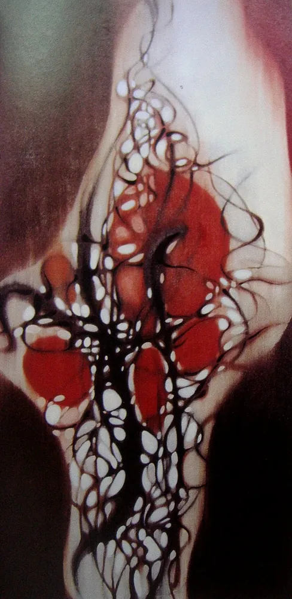

내면 풍경 No.29
- 작품명
- 내면 풍경 No.29
- 연도
- 확인 중
- 크기
- 180 × 90 cm
- 매체
- 확인 중
- 상태
- 문의 가능한 작품
- 가격
- 가격 문의
문의 가능한 작품입니다. 화실을 방문해 원작을 보실 수 있도록 예약해 주십시오.
이 작품 문의하기
이미지 설명(화면에 보이는 대로 적은 것이며 작가의 설명이 아님)
화면에 연한 색의 비스듬한 기둥 모양이 있고, 그 안에 붉은 원이 몇 개 있으며 검은 나뭇가지 모양의 굵은 선과 많은 흰색 작은 타원이 그 사이에 섞여 있습니다. 좌우 양쪽은 어두운 갈색입니다.